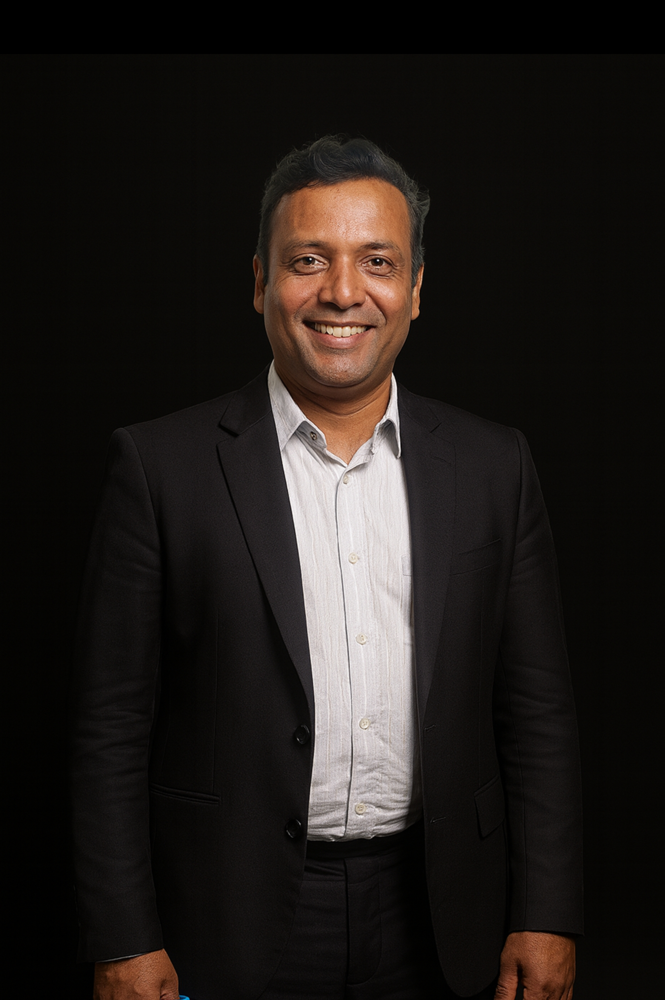

The Chief Technology Officer
Being a solutions-oriented professional with a dedicated 22+ year career establishing development of scalable enterprise software solutions and implementing organizational policies and standards to enable continued growth across complex environments by implementing robust security protocols, I will do my best as Chief Technology Officer (CTO) of NeuroPi. Having worked across leading organizations in the Middle East, including UAE Immigration Department and Emirates Airlines, my expertise lies in leveraging cutting-edge technologies to create scalable, reliable, and secure platforms, all while ensuring seamless user experiences in mission-critical environments. Throughout my career, my strength has been in enhancing collaboration and synergy between business, development, testing, and support organizations to improve time-to-market, reduce costs, and enhance the rollout of quality products.
Technology Leadership in the Middle East: I’ve helped scale technology platforms that support millions of users, ensuring efficiency, security, and real-time data processing over 16 years in Contact Centre, CRM, BPM domains, technology consulting, and Voice Portal integrations with Speech, and Enterprise Application Integration Frameworks.
Systems Engineering & Infrastructure: Expertise in building and optimizing IT infrastructures that support large-scale operations, with a focus on ensuring high availability, data security, and seamless user experiences. This experience has been invaluable in ensuring NeuroPi operates at the highest technical standards and scales smoothly to meet growing demand. Expertise in all aspects of IT including full SDLC, program and project management, internet applications design & development, collaboration, change management, and mission-critical system selection that supports large-scale operations. I have great experience in the integration of various technology components, prototyping, implementing, unit testing, regression testing, and deploying new functionality.
Entrepreneurship & Innovation: As an entrepreneur, I founded and scaled multiple technology ventures in the AI, data science, and platform development sectors, always staying ahead of industry trends. I bring this innovative mindset to NeuroPi, where we combine AI, neuroscience, and genetics to offer cutting-edge solutions that optimize human performance.